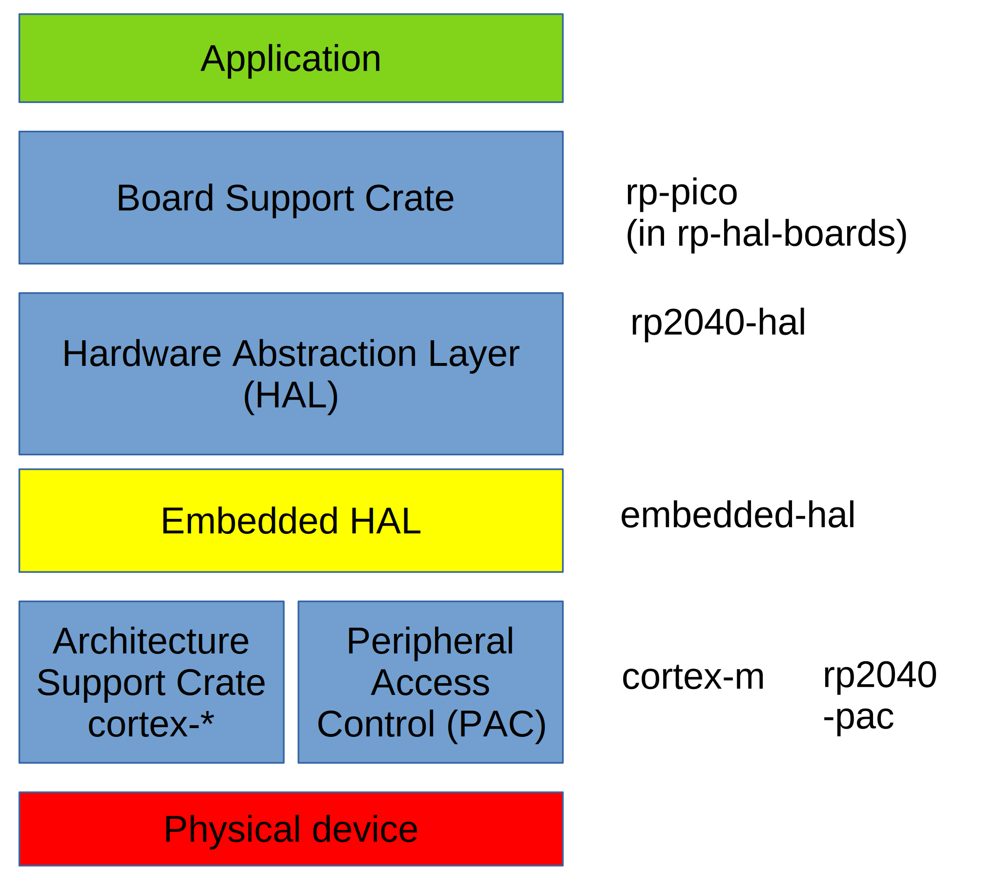

Introduction
presentation: https://rust-augsburg.github.io/2024-05-16-meetup-presentation-rust-pico/
repo of the presentation: https://github.com/rust-augsburg/2024-05-16-meetup-presentation-rust-pico
Tiago Manczak
Michael Schury https://github.com/datenzauberer
Rust Meetup Augsburg
Why Rust and Embedded Rust in particular?
Security, Memory Safety
- Ownership, Borrowing, Lifetimes
Avoidance of runtime errors
- Compile-time checks
Zero-cost abstractions
Uniform ecosystem
- Cargo as package manager
- Dependency management
- Test Framework
- Documentation creation
- Platform-independent development
- Cross-compilation
Why Pico
Decision for Pico Family
- Price-performance ratio: many peripherals at a favorable price
- Professional development environment
- Comprehensive documentation
Easy Startup with Pico
Wi-Fi with Pico W
Setup development environemt
The following setup description assumes you are using Ubuntu 22.04 LTS.
Ubuntu 22.04 setup
Please ensure your Ubuntu 22.04 installation is set up as described below.
sudo apt update
sudo apt install -y git
# curl needed for installing rust
sudo apt install -y curl
# libudev-dev needed for debugging
sudo apt install -y libudev-dev
# for cargo generate:
sudo apt install -y build-essential
sudo apt install -y pkg-config libssl-dev
Visual Studio Code (VSCode)
Download VS Code from the official website: https://code.visualstudio.com/download
Install VScode, e.g.:
sudo apt install ~/Downloads/code_1.87.2-1709912201_amd64.deb
Install the extensions (from the command line):
# rust development
code --install-extension rust-lang.rust-analyzer
# debug rust code
code --install-extension vadimcn.vscode-lldb # on macOS/Linux
#code --install-extension ms-vscode.cpptools # on Windows
# for Debugging with probe-rs:
code --install-extension probe-rs.probe-rs-debugger
Start VS Code:
- Launch VS Code from the terminal using
codeor through your applications menu.
Install Rust
Follow the official Rust installation instructions to install Rust, including the compiler (rustc) and package manager (cargo): https://www.rust-lang.org/tools/install
Execute the following installation command and do a "1 Standard installation".
curl --proto '=https' --tlsv1.2 -sSf https://sh.rustup.rs | sh
Restart your shell or source your environment variables as instructed in the terminal output (e.g., for bash: source $HOME/.cargo/env).
Verify Rust Installation
Verify Rust compiler installation
rustc --version
This command should return the version of the Rust compiler, rustc, that's currently installed on your system. For example, it might output something like rustc 1.77.1 (7cf61ebde 2024-03-27), indicating the version number and the release date.
Verify Cargo installation
Cargo is Rust's package manager and build system. To check if Cargo is installed correctly and view its version, type:
cargo --version
This should return the version of Cargo installed on your system, similar to the Rust compiler version check.
Embedded Rust Development Dependencies
Follow the installation instructions here rp-rs/rp-hal Getting Started to get ready:
rustup self update
rustup update stable
rustup target add thumbv6m-none-eabi
cargo install elf2uf2-rs --locked
cargo install probe-rs --features cli --locked
cargo install flip-link
If the installation fails due to missing dependencies, install the required packages as described in Ubuntu 22.04 setup
ATTENTION: Update the /etc/udev/rules.d (as described in Probe.rs documentation:
curl -o ~/Downloads/69-probe-rs.rules https://probe.rs/files/69-probe-rs.rules
sudo cp ~/Downloads/69-probe-rs.rules /etc/udev/rules.d
sudo udevadm control --reload
sudo udevadm trigger
cargo-generate
Install cargo-generate (to create your own projects):
cargo install cargo-generate
If the installation fails due to missing dependencies, install the required packages as described in Ubuntu 22.04 setup
Run blinky example
Clone the repo
git clone https://github.com/rust-augsburg/blinky
cd blinky
Setup Pico in BOOTSEL mode
To keep the setup minimal we via flash our pico via UF2 (USB Flashing Format). Therefore you have to put your Pico in BOOTSEL mode:
-
Locate the BOOTSEL button: This small rectangular button is usually positioned near the micro USB port on your Pico board.
-
Hold the BOOTSEL button: Press and hold the BOOTSEL button firmly.
-
Connect the Micro USB cable: While still holding the BOOTSEL button, connect the other end of the micro USB cable to your computer.
-
Release the BOOTSEL button: Once the computer recognizes the Pico, you can release the BOOTSEL button.
Run
cargo run
Embedded Basics
- Board vs. Microcontroller
- Board: Pico WH, Pico W, Pico H
- Microcontroller:
RP2040
- Cross-Compilation
- Debug Probe
Pico Boards
Microcontroller: RP2040
RPRaspberry2number of cores0Type of core M0+4SRAM: 264KB SRAMfloor(log2(ram / 16k))0onboard volatile storage
W-Model: Infineon CYW43439
- Integrated Wi-Fi: 802.11 b/g/n
- Bluetooth: BLE Support
Important Links:
- rp2040-datasheet.pdf
- getting-started-with-pico.pdf
- https://datasheets.raspberrypi.com
- https://www.raspberrypi.com/documentation/microcontrollers
Picoprobe setup
Two Raspberry Pi Picos are used. PicoA operates as a debug probe, while PicoB serves as the production probe (the target hosting your code).
Flash debug probe (PicoA)
Download the firmware debugprobe_on_pico.uf2 from:
https://github.com/raspberrypi/debugprobe/releases
ATTENTION: debugprobe_on_pico.uf2 is needed !!
(Alternatively build the debugprobe from source code as described in Getting started with Pico Build and flash picoprobe)
Boot the Raspberry Pi PicoAwith the BOOTSEL button pressed and copy the firmware, e.g.
sudo cp ~/Downloads/debugprobe_on_pico.uf2 /media/michael/RPI-RP2
Picoprobe Wiring
Debug Wiring (SWD and UART bridge)
| PicoA | PicoB | ||
|---|---|---|---|
| Pin | Description | Pin | Description |
| 38 | GND | Debug2 | GND |
| 4 | GP2 | Debug1 | SWCLK |
| 5 | GP3 | Debug3 | SWDIO |
| 6 | GP4/UART1 TX | 2 | GP1/UART0 RX |
| 7 | GP5/UART1 RX | 1 | GP1/UART0 TX |
Note: DebugPins are numbered from left to right when the USB connector is facing up.
Power Supply (Optional)
One advantage of using a Pico as a debug probe is that no separate power supply for the PicoB is needed:
| PicoA | PicoB | ||
|---|---|---|---|
| Pin | Description | Pin | Description |
| 39 | VSYS | 39 | VSYS |
Of course It's also possible to provide the power the PicoB via USB.
Testing Picoprobe
Test the connection to the probe
openocd -f interface/cmsis-dap.cfg -f target/rp2040.cfg
Now test with flashing a simple application.
Rust Embedded
Challenges
no_std-Environment- Cross-Compilation
- Debugging
- Logging
Possibilities in Rust
rp-pico- easy to learn
- collection of crates
embassy- async-based
- steeper learning curve
- support for Wi-Fi and internal LED (on Pico W board)
Rust Embedded Architecture

Important Links:
-
rp-pico: (in Github)
- https://crates.io/crates/rp-pico includes links to examples
- ist in https://github.com/rp-rs/rp-hal-boards
-
rp2040-hal:
-
embedded-hal:
-
https://github.com/rust-embedded/embedded-hal "Import info:
embedded-hal v1.0is now released!" -
https://blog.rust-embedded.org/embedded-hal-v1/ Focus on drivers
We've removed traits that were found to not be usable for generic drivers (most notably timers).
details: migrating-from-0.2-to-1.0
-
Embedded Project Structure
.
├── build.rs
├── .cargo
│ └── config.toml
|── Cargo.toml
├── Embed.toml
├── memory.x
├── README.md
├── src
│ └── main.rs
└── .vscode
└── settings.json
.cargo/configspecifies runner, build targetEmbed.tomlconfiguresprobe-rs,gdb,rttmemory.xdescribes where the RAM and FLASH are and their sizesbuild.rsensuresmemory.xis in out directory.vscode/settings.jsonconfigures debugger
PIO (Programmable Input/Output)
git clone https://github.com/datenzauberer/rust-rasperry-pico-examples
cd rust-rasperry-pico-examples/pio-demo